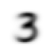
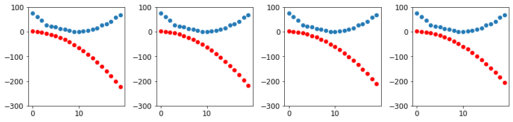

Notes on fastai Book Ch. 4
- Tenacity and Deep Learning
- The Foundations of Computer Vision
- Pixels
- Pixel Similarity
- Computing Metrics Using Broadcasting
- Stochastic Gradient Descent
- The MNIST Loss Function
- Putting It All Together
- Adding a Nonlinearity
- References
Tenacity and Deep Learning
- Deep learning practitioners need to be tenacious
- Only a handful of researchers kept trying to make neural networks work through the 1990s and 2000s.
- Yann Lecun, Yoshua Bengio, and Geoffrey Hinton were not awarded the Turing Award until 2018
- Academic Papers for neural networks were rejected by top journals and conferences, despite showing dramatically better results than anything previously published
- Jurgen Schmidhuber
- pioneered many important ideas
- worked with his student Sepp Hochreiter on the long short-term memory (LSTM) architecture
- LSTMs are now widely used for speech recognition and other text modelling tasks
- Paul Werbos
- Invented backpropagation for neural networks in 1974
- considered the most important foundation of modern AI
- Invented backpropagation for neural networks in 1974
The Foundations of Computer Vision
- MNIST Database
- contains images of handwritten digits, collected by the National Institute of Standards and Technology
- created in 1998
- LeNet-5
- A convolutional neural network structure proposed by Yann Lecun and his colleagues
- Demonstrated the first practically useful recognition of handwritten digit sequences in 1998
- One of the most important breakthroughs in the history of AI
Pixels
MNIST_SAMPLE
- A sample of the famous MNIST dataset consisting of handwritten digits.
- contains training data for the digits
3and7 - images are in 1-dimensional grayscale format
- already split into training and validation sets
from fastai.vision.all import *
from fastbook import *
matplotlib.rc('image', cmap='Greys')print(URLs.MNIST_SAMPLE)
path = untar_data(URLs.MNIST_SAMPLE)
print(path)https://s3.amazonaws.com/fast-ai-sample/mnist_sample.tgz
/home/innom-dt/.fastai/data/mnist_sample# Set base path to mnist_sample directory
Path.BASE_PATH = path# A custom fastai method that returns the contents of path as a list
path.ls()(#3) [Path('labels.csv'),Path('train'),Path('valid')]fastcore L Class
- https://fastcore.fast.ai/foundation.html#L
- Behaves like a list of
itemsbut can also index with list of indices or masks - Displays the number of items before printing the items
type(path.ls())fastcore.foundation.L(path/'train').ls()(#2) [Path('train/3'),Path('train/7')]threes = (path/'train'/'3').ls().sorted()
sevens = (path/'train'/'7').ls().sorted()
threes(#6131) [Path('train/3/10.png'),Path('train/3/10000.png'),Path('train/3/10011.png'),Path('train/3/10031.png'),Path('train/3/10034.png'),Path('train/3/10042.png'),Path('train/3/10052.png'),Path('train/3/1007.png'),Path('train/3/10074.png'),Path('train/3/10091.png')...]im3_path = threes[1]
print(im3_path)
im3 = Image.open(im3_path)
im3/home/innom-dt/.fastai/data/mnist_sample/train/3/10000.png
PIL Image Module
- https://pillow.readthedocs.io/en/stable/reference/Image.html
- provides a class with the same name which is used to represent a PIL image
- provides a number of factory functions, including functions to load images from files, and to create new images
print(type(im3))
print(im3.size)<class 'PIL.PngImagePlugin.PngImageFile'>
(28, 28)# Slice of the image from index 4 up to, but not including, index 10
array(im3)[4:10,4:10]array([[ 0, 0, 0, 0, 0, 0],
[ 0, 0, 0, 0, 0, 29],
[ 0, 0, 0, 48, 166, 224],
[ 0, 93, 244, 249, 253, 187],
[ 0, 107, 253, 253, 230, 48],
[ 0, 3, 20, 20, 15, 0]], dtype=uint8)NumPy Arrays and PyTorch Tensors
- NumPy
- the most widely used library for scientific and numeric programming in Python
- does not support using GPUs or calculating gradients
- Python is slow compared to many languages
- anything fast in Python is likely to be a wrapper for a compiled object written and optimized in another language like C
- NumPy arrays and PyTorch tensors can finish computations many thousands of times than using pure Python
- NumPy array
- a multidimensional table of data
- all items are the same type
- can use any type, including arrays, for the array type
- simple types are stored as a compact C data structure in memory
- PyTorch tensor
- nearly identical to NumPy arrays
- can only use a single basic numeric type for all elements
- not as flexible as a genuine array of arrays
- must always be a regularly shaped multi-dimensional rectangular structure
- cannot be jagged
- must always be a regularly shaped multi-dimensional rectangular structure
- supports using GPUs
- PyTorch can automatically calculate derivatives of operations performed with tensors
- impossible to do deep learning without this capability
- perform operations directly on arrays or tensors as much as possible instead of using loops
data = [[1,2,3],[4,5,6]]
arr = array (data)
tns = tensor(data)arr # numpyarray([[1, 2, 3],
[4, 5, 6]])tns # pytorchtensor([[1, 2, 3],
[4, 5, 6]])# select a row
tns[1]tensor([4, 5, 6])# select a column
tns[:,1]tensor([2, 5])# select a slice
tns[1,1:3]tensor([5, 6])# Perform element-wise addition
tns+1tensor([[2, 3, 4],
[5, 6, 7]])tns.type()'torch.LongTensor'# Perform element-wise multiplication
tns*1.5tensor([[1.5000, 3.0000, 4.5000],
[6.0000, 7.5000, 9.0000]])NumPy Array Objects
- https://numpy.org/doc/stable/reference/arrays.html
- an N-dimensional array type, the ndarray, which describes a collection of “items” of the same type
numpy.array function
- https://numpy.org/doc/stable/reference/generated/numpy.array.html
- creates an array
print(type(array(im3)[4:10,4:10]))
array<class 'numpy.ndarray'>
<function numpy.array>print(array(im3)[4:10,4:10][0].data)
print(array(im3)[4:10,4:10][0].dtype)<memory at 0x7f3c13a20dc0>
uint8PyTorch Tensor
- https://pytorch.org/docs/stable/tensors.html
- a multi-dimensional matrix containing elements of a single data type
fastai tensor function
- https://docs.fast.ai/torch_core.html#tensor
- Like torch.as_tensor, but handle lists too, and can pass multiple vector elements directly.
print(type(tensor(im3)[4:10,4:10][0]))
tensor<class 'torch.Tensor'>
<function fastai.torch_core.tensor(x, *rest, dtype=None, device=None, requires_grad=False, pin_memory=False)>print(tensor(im3)[4:10,4:10][0].data)
print(tensor(im3)[4:10,4:10][0].dtype)tensor([0, 0, 0, 0, 0, 0], dtype=torch.uint8)
torch.uint8Pandas DataFrame
- https://pandas.pydata.org/docs/reference/api/pandas.DataFrame.html
- Two-dimensional, size-mutable, potentially heterogeneous tabular data
# Full Image
pd.DataFrame(tensor(im3))| 0 | 1 | 2 | 3 | 4 | 5 | 6 | 7 | 8 | 9 | 10 | 11 | 12 | 13 | 14 | 15 | 16 | 17 | 18 | 19 | 20 | 21 | 22 | 23 | 24 | 25 | 26 | 27 | |
|---|---|---|---|---|---|---|---|---|---|---|---|---|---|---|---|---|---|---|---|---|---|---|---|---|---|---|---|---|
| 0 | 0 | 0 | 0 | 0 | 0 | 0 | 0 | 0 | 0 | 0 | 0 | 0 | 0 | 0 | 0 | 0 | 0 | 0 | 0 | 0 | 0 | 0 | 0 | 0 | 0 | 0 | 0 | 0 |
| 1 | 0 | 0 | 0 | 0 | 0 | 0 | 0 | 0 | 0 | 0 | 0 | 0 | 0 | 0 | 0 | 0 | 0 | 0 | 0 | 0 | 0 | 0 | 0 | 0 | 0 | 0 | 0 | 0 |
| 2 | 0 | 0 | 0 | 0 | 0 | 0 | 0 | 0 | 0 | 0 | 0 | 0 | 0 | 0 | 0 | 0 | 0 | 0 | 0 | 0 | 0 | 0 | 0 | 0 | 0 | 0 | 0 | 0 |
| 3 | 0 | 0 | 0 | 0 | 0 | 0 | 0 | 0 | 0 | 0 | 0 | 0 | 0 | 0 | 0 | 0 | 0 | 0 | 0 | 0 | 0 | 0 | 0 | 0 | 0 | 0 | 0 | 0 |
| 4 | 0 | 0 | 0 | 0 | 0 | 0 | 0 | 0 | 0 | 0 | 0 | 0 | 0 | 0 | 0 | 0 | 0 | 0 | 0 | 0 | 0 | 0 | 0 | 0 | 0 | 0 | 0 | 0 |
| 5 | 0 | 0 | 0 | 0 | 0 | 0 | 0 | 0 | 0 | 29 | 150 | 195 | 254 | 255 | 254 | 176 | 193 | 150 | 96 | 0 | 0 | 0 | 0 | 0 | 0 | 0 | 0 | 0 |
| 6 | 0 | 0 | 0 | 0 | 0 | 0 | 0 | 48 | 166 | 224 | 253 | 253 | 234 | 196 | 253 | 253 | 253 | 253 | 233 | 0 | 0 | 0 | 0 | 0 | 0 | 0 | 0 | 0 |
| 7 | 0 | 0 | 0 | 0 | 0 | 93 | 244 | 249 | 253 | 187 | 46 | 10 | 8 | 4 | 10 | 194 | 253 | 253 | 233 | 0 | 0 | 0 | 0 | 0 | 0 | 0 | 0 | 0 |
| 8 | 0 | 0 | 0 | 0 | 0 | 107 | 253 | 253 | 230 | 48 | 0 | 0 | 0 | 0 | 0 | 192 | 253 | 253 | 156 | 0 | 0 | 0 | 0 | 0 | 0 | 0 | 0 | 0 |
| 9 | 0 | 0 | 0 | 0 | 0 | 3 | 20 | 20 | 15 | 0 | 0 | 0 | 0 | 0 | 43 | 224 | 253 | 245 | 74 | 0 | 0 | 0 | 0 | 0 | 0 | 0 | 0 | 0 |
| 10 | 0 | 0 | 0 | 0 | 0 | 0 | 0 | 0 | 0 | 0 | 0 | 0 | 0 | 0 | 249 | 253 | 245 | 126 | 0 | 0 | 0 | 0 | 0 | 0 | 0 | 0 | 0 | 0 |
| 11 | 0 | 0 | 0 | 0 | 0 | 0 | 0 | 0 | 0 | 0 | 0 | 14 | 101 | 223 | 253 | 248 | 124 | 0 | 0 | 0 | 0 | 0 | 0 | 0 | 0 | 0 | 0 | 0 |
| 12 | 0 | 0 | 0 | 0 | 0 | 0 | 0 | 0 | 0 | 11 | 166 | 239 | 253 | 253 | 253 | 187 | 30 | 0 | 0 | 0 | 0 | 0 | 0 | 0 | 0 | 0 | 0 | 0 |
| 13 | 0 | 0 | 0 | 0 | 0 | 0 | 0 | 0 | 0 | 16 | 248 | 250 | 253 | 253 | 253 | 253 | 232 | 213 | 111 | 2 | 0 | 0 | 0 | 0 | 0 | 0 | 0 | 0 |
| 14 | 0 | 0 | 0 | 0 | 0 | 0 | 0 | 0 | 0 | 0 | 0 | 43 | 98 | 98 | 208 | 253 | 253 | 253 | 253 | 187 | 22 | 0 | 0 | 0 | 0 | 0 | 0 | 0 |
| 15 | 0 | 0 | 0 | 0 | 0 | 0 | 0 | 0 | 0 | 0 | 0 | 0 | 0 | 0 | 9 | 51 | 119 | 253 | 253 | 253 | 76 | 0 | 0 | 0 | 0 | 0 | 0 | 0 |
| 16 | 0 | 0 | 0 | 0 | 0 | 0 | 0 | 0 | 0 | 0 | 0 | 0 | 0 | 0 | 0 | 0 | 1 | 183 | 253 | 253 | 139 | 0 | 0 | 0 | 0 | 0 | 0 | 0 |
| 17 | 0 | 0 | 0 | 0 | 0 | 0 | 0 | 0 | 0 | 0 | 0 | 0 | 0 | 0 | 0 | 0 | 0 | 182 | 253 | 253 | 104 | 0 | 0 | 0 | 0 | 0 | 0 | 0 |
| 18 | 0 | 0 | 0 | 0 | 0 | 0 | 0 | 0 | 0 | 0 | 0 | 0 | 0 | 0 | 0 | 0 | 85 | 249 | 253 | 253 | 36 | 0 | 0 | 0 | 0 | 0 | 0 | 0 |
| 19 | 0 | 0 | 0 | 0 | 0 | 0 | 0 | 0 | 0 | 0 | 0 | 0 | 0 | 0 | 0 | 60 | 214 | 253 | 253 | 173 | 11 | 0 | 0 | 0 | 0 | 0 | 0 | 0 |
| 20 | 0 | 0 | 0 | 0 | 0 | 0 | 0 | 0 | 0 | 0 | 0 | 0 | 0 | 0 | 98 | 247 | 253 | 253 | 226 | 9 | 0 | 0 | 0 | 0 | 0 | 0 | 0 | 0 |
| 21 | 0 | 0 | 0 | 0 | 0 | 0 | 0 | 0 | 0 | 0 | 0 | 0 | 42 | 150 | 252 | 253 | 253 | 233 | 53 | 0 | 0 | 0 | 0 | 0 | 0 | 0 | 0 | 0 |
| 22 | 0 | 0 | 0 | 0 | 0 | 0 | 42 | 115 | 42 | 60 | 115 | 159 | 240 | 253 | 253 | 250 | 175 | 25 | 0 | 0 | 0 | 0 | 0 | 0 | 0 | 0 | 0 | 0 |
| 23 | 0 | 0 | 0 | 0 | 0 | 0 | 187 | 253 | 253 | 253 | 253 | 253 | 253 | 253 | 197 | 86 | 0 | 0 | 0 | 0 | 0 | 0 | 0 | 0 | 0 | 0 | 0 | 0 |
| 24 | 0 | 0 | 0 | 0 | 0 | 0 | 103 | 253 | 253 | 253 | 253 | 253 | 232 | 67 | 1 | 0 | 0 | 0 | 0 | 0 | 0 | 0 | 0 | 0 | 0 | 0 | 0 | 0 |
| 25 | 0 | 0 | 0 | 0 | 0 | 0 | 0 | 0 | 0 | 0 | 0 | 0 | 0 | 0 | 0 | 0 | 0 | 0 | 0 | 0 | 0 | 0 | 0 | 0 | 0 | 0 | 0 | 0 |
| 26 | 0 | 0 | 0 | 0 | 0 | 0 | 0 | 0 | 0 | 0 | 0 | 0 | 0 | 0 | 0 | 0 | 0 | 0 | 0 | 0 | 0 | 0 | 0 | 0 | 0 | 0 | 0 | 0 |
| 27 | 0 | 0 | 0 | 0 | 0 | 0 | 0 | 0 | 0 | 0 | 0 | 0 | 0 | 0 | 0 | 0 | 0 | 0 | 0 | 0 | 0 | 0 | 0 | 0 | 0 | 0 | 0 | 0 |
tensor(im3).shapetorch.Size([28, 28])im3_t = tensor(im3)
# Create a pandas DataFrame from image slice
df = pd.DataFrame(im3_t[4:15,4:22])
# Set defined CSS-properties to each ``<td>`` HTML element within the given subset.
# Color-code the values using a gradient
df.style.set_properties(**{'font-size':'6pt'}).background_gradient('Greys')| 0 | 1 | 2 | 3 | 4 | 5 | 6 | 7 | 8 | 9 | 10 | 11 | 12 | 13 | 14 | 15 | 16 | 17 | |
|---|---|---|---|---|---|---|---|---|---|---|---|---|---|---|---|---|---|---|
| 0 | 0 | 0 | 0 | 0 | 0 | 0 | 0 | 0 | 0 | 0 | 0 | 0 | 0 | 0 | 0 | 0 | 0 | 0 |
| 1 | 0 | 0 | 0 | 0 | 0 | 29 | 150 | 195 | 254 | 255 | 254 | 176 | 193 | 150 | 96 | 0 | 0 | 0 |
| 2 | 0 | 0 | 0 | 48 | 166 | 224 | 253 | 253 | 234 | 196 | 253 | 253 | 253 | 253 | 233 | 0 | 0 | 0 |
| 3 | 0 | 93 | 244 | 249 | 253 | 187 | 46 | 10 | 8 | 4 | 10 | 194 | 253 | 253 | 233 | 0 | 0 | 0 |
| 4 | 0 | 107 | 253 | 253 | 230 | 48 | 0 | 0 | 0 | 0 | 0 | 192 | 253 | 253 | 156 | 0 | 0 | 0 |
| 5 | 0 | 3 | 20 | 20 | 15 | 0 | 0 | 0 | 0 | 0 | 43 | 224 | 253 | 245 | 74 | 0 | 0 | 0 |
| 6 | 0 | 0 | 0 | 0 | 0 | 0 | 0 | 0 | 0 | 0 | 249 | 253 | 245 | 126 | 0 | 0 | 0 | 0 |
| 7 | 0 | 0 | 0 | 0 | 0 | 0 | 0 | 14 | 101 | 223 | 253 | 248 | 124 | 0 | 0 | 0 | 0 | 0 |
| 8 | 0 | 0 | 0 | 0 | 0 | 11 | 166 | 239 | 253 | 253 | 253 | 187 | 30 | 0 | 0 | 0 | 0 | 0 |
| 9 | 0 | 0 | 0 | 0 | 0 | 16 | 248 | 250 | 253 | 253 | 253 | 253 | 232 | 213 | 111 | 2 | 0 | 0 |
| 10 | 0 | 0 | 0 | 0 | 0 | 0 | 0 | 43 | 98 | 98 | 208 | 253 | 253 | 253 | 253 | 187 | 22 | 0 |
Pixel Similarity
- Establish a baseline to compare against your model
- a simple model that you are confident should perform reasonably well
- should be simple to implement and easy to test
- helps indicate whether your super-fancy models are any good
Method
- Calculate the average values for each pixel location across all images for each digit
- This will generate a blurry image of the target digit
- Compare the values for each pixel location in a new image to the average
# Store all images of the digit 7 in a list of tensors
seven_tensors = [tensor(Image.open(o)) for o in sevens]
# Store all iamges of the digit 3 in a list of tensors
three_tensors = [tensor(Image.open(o)) for o in threes]
len(three_tensors),len(seven_tensors)(6131, 6265)fastai show_image function
- https://docs.fast.ai/torch_core.html#show_image
- Display tensor as an image
show_image(three_tensors[1]);
PyTorch Stack Function
- https://pytorch.org/docs/stable/generated/torch.stack.html
- Concatenates a sequence of tensors along a new dimension
# Stack all images for each digit into a single tensor
# and scale pixel values from the range [0,255] to [0,1]
stacked_sevens = torch.stack(seven_tensors).float()/255
stacked_threes = torch.stack(three_tensors).float()/255
stacked_threes.shapetorch.Size([6131, 28, 28])python len(stacked_threes.shape) |
stacked_threes.ndim3# Calculate the mean values for each pixel location across all images of the digit 3
mean3 = stacked_threes.mean(0)
show_image(mean3);
# Calculate the mean values for each pixel location across all images of the digit 7
mean7 = stacked_sevens.mean(0)
show_image(mean7);
# Pick a single image to compare to the average
a_3 = stacked_threes[1]
show_image(a_3);
# Calculate the Mean Absolute Error between the single image and the mean pixel values
dist_3_abs = (a_3 - mean3).abs().mean()
# Calculate the Root Mean Squared Error between the single image and the mean pixel values
dist_3_sqr = ((a_3 - mean3)**2).mean().sqrt()
print(f"MAE: {dist_3_abs}")
print(f"RMSE: {dist_3_sqr}")MAE: 0.11143654584884644
RMSE: 0.20208320021629333Khan Academy: Understanding Square Roots
dist_7_abs = (a_3 - mean7).abs().mean()
dist_7_sqr = ((a_3 - mean7)**2).mean().sqrt()
print(f"MAE: {dist_7_abs}")
print(f"RMSE: {dist_7_sqr}")MAE: 0.15861910581588745
RMSE: 0.30210891366004944Note: The error is larger when comparing the image of a
3to the average pixel values for the digit7
torch.nn.functional
- https://pytorch.org/docs/stable/nn.functional.html
- Provides access to a variety of functions in PyTorch
F<module 'torch.nn.functional' from '/home/innom-dt/miniconda3/envs/fastbook/lib/python3.9/site-packages/torch/nn/functional.py'>PyTorch l1_loss function
- https://pytorch.org/docs/stable/generated/torch.nn.functional.l1_loss.html#torch.nn.functional.l1_loss
- takes the mean element-wise absolute value difference
PyTorch mse_loss function
- https://pytorch.org/docs/stable/generated/torch.nn.functional.mse_loss.html#torch.nn.functional.mse_loss
- Measures the element-wise mean squared error
- Penalizes bigger mistakes more heavily
# Calculate the Mean Absolute Error aka L1 norm
print(F.l1_loss(a_3.float(),mean7))
# Calculate the Root Mean Squared Error aka L2 norm
print(F.mse_loss(a_3,mean7).sqrt())tensor(0.1586)
tensor(0.3021)Computing Metrics Using Broadcasting
- broadcasting
- automatically expanding a tensor with a smaller rank to have the same size one with a larger rank to perform an operation
- an important capability that makes tensor code much easier to write
- PyTorch does not allocate additional memory for broadcasting
- it does not actually create multiple copies of the smaller tensor
- PyTorch performs broadcast calculations in C on the CPU and CUDA on the GPU
- tens of thousands of times faster than pure Python
- up to millions of times faster on GPU
# Create tensors for the validation set for the digit 3
# and stack them into a single tensor
valid_3_tens = torch.stack([tensor(Image.open(o))
for o in (path/'valid'/'3').ls()])
# Scale pixel values from [0,255] to [0,1]
valid_3_tens = valid_3_tens.float()/255
# Create tensors for the validation set for the digit 7
# and stack them into a single tensor
valid_7_tens = torch.stack([tensor(Image.open(o))
for o in (path/'valid'/'7').ls()])
# Scale pixel values from [0,255] to [0,1]
valid_7_tens = valid_7_tens.float()/255
valid_3_tens.shape,valid_7_tens.shape(torch.Size([1010, 28, 28]), torch.Size([1028, 28, 28]))# Calculate Mean Absolute Error using broadcasting
# Subtraction operation is performed using broadcasting
# Absolute Value operation is performed elementwise
# Mean operation is performed over the values indexed by the height and width axes
def mnist_distance(a,b): return (a-b).abs().mean((-1,-2))
# Calculate MAE for two single images
mnist_distance(a_3, mean3)tensor(0.1114)# Calculate MAE between a single image and a vector of images
valid_3_dist = mnist_distance(valid_3_tens, mean3)
valid_3_dist, valid_3_dist.shape(tensor([0.1422, 0.1230, 0.1055, ..., 0.1244, 0.1188, 0.1103]),
torch.Size([1010]))tensor([1,2,3]) + tensor([1,1,1])tensor([2, 3, 4])(valid_3_tens-mean3).shapetorch.Size([1010, 28, 28])# Compare the MAE value between the single and the mean values for the digits 3 and 7
def is_3(x): return mnist_distance(x,mean3) < mnist_distance(x,mean7)is_3(a_3), is_3(a_3).float()(tensor(True), tensor(1.))is_3(valid_3_tens)tensor([ True, True, True, ..., False, True, True])accuracy_3s = is_3(valid_3_tens).float() .mean()
accuracy_7s = (1 - is_3(valid_7_tens).float()).mean()
accuracy_3s,accuracy_7s,(accuracy_3s+accuracy_7s)/2(tensor(0.9168), tensor(0.9854), tensor(0.9511))print(f"Correct 3s: {accuracy_3s * valid_3_tens.shape[0]:.0f}")
print(f"Incorrect 3s: {(1 - accuracy_3s) * valid_3_tens.shape[0]:.0f}")Correct 3s: 926
Incorrect 3s: 84print(f"Correct 7s: {accuracy_7s * valid_7_tens.shape[0]:.0f}")
print(f"Incorrect 7s: {(1 - accuracy_7s) * valid_7_tens.shape[0]:.0f}")Correct 7s: 1013
Incorrect 7s: 15Stochastic Gradient Descent
- the key to having a model that can improve
- need to represent a task such that their are weight assignments that can be evaluated and updated
- Sample function:
- assign a weight value to each pixel location
Xis the image represented as a vector- all of the rows are stacked up end to end into a single long line
Wcontains the weights for each pixel
def pr_eight(x,w) = (x*w).sum()
def f(x): return x**2plot_function
plot_function(f, 'x', 'x**2')
plot_function(f, 'x', 'x**2')
plt.scatter(-1.5, f(-1.5), color='red');Calculating Gradients
- the gradients tell us how much we need to change each weight to make our model better
- \(\frac{rise}{run} = \frac{the \ change \ in \ value \ of \ the \ function}{the \ change \ in \ the \ value \ of \ the \ parameter}\)
- derivative of a function
- tells you how much a change in its parameters will change its result
- Khan Academy: Basic Derivatives
- when we know how our function will change, we know how to make it smaller
- the key to machine learning
- PyTorch is able to automatically compute the derivative of nearly any function
- The gradient only tells us the slope of the function
- it does not indicate exactly how far to adjust the parameters
- if the slope is large, more adjustments may be required
- if the slope is small, we may be close to the optimal value
Tensor.requires_grad
- https://pytorch.org/docs/stable/generated/torch.Tensor.requires_grad.html
- is
Trueif gradients need to be computed for the Tensor - here gradient refers to the value of a function’s derivative at a particular argument value
- The PyTorch API puts the focus onto the argument, not the function
xt = tensor(3.).requires_grad_()yt = f(xt)
yttensor(9., grad_fn=<PowBackward0>)Tensor.grad_fn
- https://pytorch.org/tutorials/beginner/former_torchies/autograd_tutorial.html#tensors-that-track-history
- references a function that has created a function
yt.grad_fn<PowBackward0 at 0x7f91e90a6670>Tensor.backward()
- https://pytorch.org/docs/stable/generated/torch.Tensor.backward.html#torch.Tensor.backward
- Computes the gradient of current tensor w.r.t. graph leaves.
- uses the chain rule
- backward refers to backpropagation
- the process of calculating the derivative for each layer
yt.backward()The derivative of f(x) = x**2 is 2x, so the derivative at x=3 is 6
xt.gradtensor(6.)Derivatives should be 6, 8, 20
xt = tensor([3.,4.,10.]).requires_grad_()
xttensor([ 3., 4., 10.], requires_grad=True)def f(x): return (x**2).sum()
yt = f(xt)
yttensor(125., grad_fn=<SumBackward0>)yt.backward()
xt.gradtensor([ 6., 8., 20.])Stepping with a Learning Rate
- nearly all approaches to updating model parameters start with multiplying the gradient by some small number called the learning rate
- Learning rate is often a number between
0.001and0.1- could be value
- stepping: adjusting your model parameters
- size of step is determined by the learning rate
- picking a learning rate that is too small means more steps are needed to reach the optimal parameter values
- picking a learning rate that is too big can result in the loss getting worse or bouncing around the same range of values
An End-to-End SGD Example
- Steps to turn function into classifier
- Initialize the weights
- initialize parameters to random values
- For each image, use these weights to predict whether it appears to be a 3 or a 7.
- Based on these predictions, calculate how good the model is (it loss)
- “testing the effectiveness of any current weight assignment in terms of actual performance”
- need a function that will return a number that is small when performance is good
- standard convention is to treat a small loss as good and a large loss as bad
- Calculate the gradient, which measures for each weight how changing that weight would change the loss
- use calculus to determine whether to increase or decrease individual weight values
- Step (update) the weights based on that calculation
- Go back to step 2 and repeat the process
- Iterate until you decide to stop the training process
- until either the model is good enough, the model accuracy starts to decrease or you don’t want to wait any longer
- Initialize the weights
Scenario: build a model of how the speed of a rollercoaster changes over time
torch.arange()
- https://pytorch.org/docs/stable/generated/torch.arange.html?highlight=arange#torch.arange
- Returns a 1-D tensor of size \(\left\lceil \frac{\text{end} - \text{start}}{\text{step}} \right\rceil\) with values from the interval
[start, end)taken with common differencestepbeginning fromstart.
time = torch.arange(0,20).float();
print(time)tensor([ 0., 1., 2., 3., 4., 5., 6., 7., 8., 9., 10., 11., 12., 13., 14., 15., 16., 17., 18., 19.])torch.randn()
- https://pytorch.org/docs/stable/generated/torch.randn.html?highlight=randn#torch.randn
- Returns a tensor filled with random numbers from a normal distribution with mean 0 and variance 1 (also called the standard normal distribution)
matplotlib.pyplot.scatter()
- https://matplotlib.org/stable/api/_as_gen/matplotlib.pyplot.scatter.html
- A scatter plot of y vs. x with varying marker size and/or color.
# Add some random noise to mimic manually measuring the speed
speed = torch.randn(20)*3 + 0.75*(time-9.5)**2 + 1
plt.scatter(time,speed);
# A quadratic function with trainable parameters
def f(t, params):
a,b,c = params
return a*(t**2) + (b*t) + cdef mse(preds, targets): return ((preds-targets)**2).mean().sqrt()Step 1: Initialize the parameters
# Initialize trainable parameters with random values
# Let PyTorch know that we want to track the gradients
params = torch.randn(3).requires_grad_()
paramstensor([-0.7658, -0.7506, 1.3525], requires_grad=True)#hide
orig_params = params.clone()Step 2: Calculate the predictions
preds = f(time, params)
print(preds.shape)
predstorch.Size([20])
tensor([ 1.3525e+00, -1.6391e-01, -3.2121e+00, -7.7919e+00, -1.3903e+01, -2.1547e+01, -3.0721e+01, -4.1428e+01, -5.3666e+01, -6.7436e+01, -8.2738e+01, -9.9571e+01, -1.1794e+02, -1.3783e+02,
-1.5926e+02, -1.8222e+02, -2.0671e+02, -2.3274e+02, -2.6029e+02, -2.8938e+02], grad_fn=<AddBackward0>)def show_preds(preds, ax=None):
if ax is None: ax=plt.subplots()[1]
ax.scatter(time, speed)
ax.scatter(time, to_np(preds), color='red')
ax.set_ylim(-300,100)show_preds(preds)Step 3: Calculate the loss
- goal is to minimize this value
loss = mse(preds, speed)
losstensor(160.6979, grad_fn=<SqrtBackward0>)Step 4: Calculate the gradients
loss.backward()
params.gradtensor([-165.5151, -10.6402, -0.7900])# Set learning rate to 0.00001
lr = 1e-5# Multiply the graients by the learning rate
params.grad * lrtensor([-1.6552e-03, -1.0640e-04, -7.8996e-06])paramstensor([-0.7658, -0.7506, 1.3525], requires_grad=True)Step 5: Step the weights.
# Using a learning rate of 0.0001 for larger steps
lr = 1e-4
# Update the parameter values
params.data -= lr * params.grad.data
# Reset the computed gradients
params.grad = None# Test the updated parameter values
preds = f(time,params)
mse(preds, speed)tensor(157.9476, grad_fn=<SqrtBackward0>)show_preds(preds)def apply_step(params, prn=True):
preds = f(time, params)
loss = mse(preds, speed)
loss.backward()
params.data -= lr * params.grad.data
params.grad = None
if prn: print(loss.item())
return predsStep 6: Repeat the process
for i in range(10): apply_step(params)157.9476318359375
155.1999969482422
152.45513916015625
149.71319580078125
146.97434997558594
144.23875427246094
141.50660705566406
138.77809143066406
136.05340576171875
133.33282470703125_,axs = plt.subplots(1,4,figsize=(12,3))
for ax in axs: show_preds(apply_step(params, False), ax)
plt.tight_layout()
Many steps later…
_,axs = plt.subplots(1,4,figsize=(12,3))
for ax in axs: show_preds(apply_step(params, False), ax)
plt.tight_layout()
Step 7: Stop
- Watch the training and validation losses and our metrics to decide when to stop
Summarizing Gradient Descent
- Initial model weights can be randomly initialized or from a pretrained model
- Compare the model output with our labeled training data using a loss function
- The loss function returns a number that we want to minimize by improving the model weights
- We change the weights a little bit to make the model slightly better based on gradients calculated using calculus
- the magnitude of the gradients indicate how big of a step needs to be taken
- Multiply the gradients by a learning rate to control how big of a change to make for each update
- Iterate

The MNIST Loss Function
- Khan Academy: Intro to Matrix Multiplication
- Accuracy is not useful as a loss function
- accuracy only changes when prediction changes from a 3 to a 7 or vice versa
- its derivative is 0 almost everywhere
- need a loss function that gives a slightly better loss when our weights result in slightly better prediction
torch.cat()
- https://pytorch.org/docs/stable/generated/torch.cat.html
- Concatenates a given sequence of tensors in the specified dimension
- All tensor must have the same shape except in the specified dimension
Tensor.view()
- https://pytorch.org/docs/stable/generated/torch.Tensor.view.html#torch.Tensor.view
- Returns a new tensor with the same data as the self tensor but of a different shape.
# 1. Concatenate all independent variables into a single tensor
# 2. Flatten each image matrix into a vector
# -1: auto adjust axis to maintain fit all the data
train_x = torch.cat([stacked_threes, stacked_sevens]).view(-1, 28*28)train_x.shapetorch.Size([12396, 784])# Label 3s as `1` and label 7s as `0`
train_y = tensor([1]*len(threes) + [0]*len(sevens)).unsqueeze(1)
train_y.shapetorch.Size([12396, 1])# Combine independent and dependent variables into a dataset
dset = list(zip(train_x,train_y))
x,y = dset[0]
x.shape,y(torch.Size([784]), tensor([1]))valid_x = torch.cat([valid_3_tens, valid_7_tens]).view(-1, 28*28)
valid_y = tensor([1]*len(valid_3_tens) + [0]*len(valid_7_tens)).unsqueeze(1)
valid_dset = list(zip(valid_x,valid_y))# Randomly initialize parameters
def init_params(size, std=1.0): return (torch.randn(size)*std).requires_grad_()# Initialize weight values
weights = init_params((28*28,1))# Initialize bias values
bias = init_params(1)# Calculate a prediction for a single image
(train_x[0]*weights.T).sum() + biastensor([-6.2330], grad_fn=<AddBackward0>)Matrix Multiplication
# Matrix multiplication using loops
def mat_mul(m1, m2):
result = []
for m1_r in range(len(m1)):
for m2_r in range(len(m2[0])):
sum_val = 0
for c in range(len(m1[0])):
sum_val += m1[m1_r][c] * m2[c][m2_r]
result += [sum_val]
return result# Create copies of the tensors that don't require gradients
train_x_clone = train_x.clone().detach()
weights_clone = weights.clone().detach()%%time
# Matrix multiplication using @ operator
(train_x_clone@weights_clone)[:5]CPU times: user 2.35 ms, sys: 4.15 ms, total: 6.5 ms
Wall time: 5.29 ms
tensor([[ -6.5802],
[-10.9860],
[-21.2337],
[-18.2173],
[ -1.7079]], device='cuda:0')%%time
# This is why you should avoid using loops
mat_mul(train_x_clone, weights_clone)[:5]CPU times: user 1min 37s, sys: 28 ms, total: 1min 37s
Wall time: 1min 37s
[tensor(-6.5802, device='cuda:0'),
tensor(-10.9860, device='cuda:0'),
tensor(-21.2337, device='cuda:0'),
tensor(-18.2173, device='cuda:0'),
tensor(-1.7079, device='cuda:0')]# Move tensor copies to GPU
train_x_clone = train_x_clone.to('cuda');
weights_clone = weights_clone.to('cuda');%%time
(train_x_clone@weights_clone)[:5]CPU times: user 2.19 ms, sys: 131 µs, total: 2.32 ms
Wall time: 7.78 ms
tensor([[ -6.5802],
[-10.9860],
[-21.2337],
[-18.2173],
[ -1.7079]], device='cuda:0')# Over 86,000 times faster on GPU
print(f"{(44.9 * 1e+6) / 522:,.2f}")86,015.33# Define a linear layer
# Matrix-multiply xb and weights and add the bias
def linear1(xb): return xb@weights + bias
preds = linear1(train_x)
predstensor([[ -6.2330],
[-10.6388],
[-20.8865],
...,
[-15.9176],
[ -1.6866],
[-11.3568]], grad_fn=<AddBackward0>)# Determine which predictions were correct
corrects = (preds>0.0).float() == train_y
correctstensor([[False],
[False],
[False],
...,
[ True],
[ True],
[ True]])# Calculate the current model accuracy
corrects.float().mean().item()0.5379961133003235# Test a small change in the weights
with torch.no_grad():
weights[0] *= 1.0001preds = linear1(train_x)
((preds>0.0).float() == train_y).float().mean().item()0.5379961133003235trgts = tensor([1,0,1])
prds = tensor([0.9, 0.4, 0.2])torch.where(condition, x, y)
- https://pytorch.org/docs/stable/generated/torch.where.html
- Return a tensor of elements selected from either
xory, depending oncondition
# Measures how distant each prediction is from 1 if it should be one
# and how distant it is from 0 if it should be 0 and take the mean of those distances
# returns a lower number when predictions are more accurate
# Assumes that all predictions are between 0 and 1
def mnist_loss(predictions, targets):
# return
return torch.where(targets==1, 1-predictions, predictions).mean()torch.where(trgts==1, 1-prds, prds)tensor([0.1000, 0.4000, 0.8000])mnist_loss(prds,trgts)tensor(0.4333)mnist_loss(tensor([0.9, 0.4, 0.8]),trgts)tensor(0.2333)Sigmoid Function
- always returns a value between 0 and 1
- function is a smooth curve only goes up
- makes it easier for SGD to find meaningful gradients
torch.exp(x)
https://pytorch.org/docs/stable/generated/torch.exp.html returns \(e^{x}\) where \(e\) is [Euler’s number](https://en.wikipedia.org/wiki/E_(mathematical_constant) * \(e \approx 2.7183\)
print(torch.exp(tensor(1)))
print(torch.exp(tensor(2)))tensor(2.7183)
tensor(7.3891)# Always returns a number between 0 and 1
def sigmoid(x): return 1/(1+torch.exp(-x))plot_function(torch.sigmoid, title='Sigmoid', min=-4, max=4);
def mnist_loss(predictions, targets):
predictions = predictions.sigmoid()
return torch.where(targets==1, 1-predictions, predictions).mean()SGD and Mini-Batches
- calculating the loss for the entire dataset would take a lot of time
- the full dataset is also unlikely to fit in memory
- calculating the loss for single data item would result in an imprecise and unstable gradient
- we can compromise by calculating the loss for a few data items at a time
- mini-batch: a subset of data items
- batch size: the number of data items in a mini-batch
- larger batch-size
- typically results in a more accurate and stable estimate of your dataset’s gradient from the loss function
- takes longer per mini-batch
- fewer mini-batches processed per epoch
- the batch size is limited by the amount of available memory for the CPU or GPU
- ideal batch-size is context dependent
- larger batch-size
- accelerators like GPUs work best when they have lots of work to do at a time
- typically want to use the largest batch-size that will fit in GPU memory
- typically want to randomly shuffle the contents of mini-batches for each epoch
- DataLoader
- handles shuffling and mini-batch collation
- can take any Python collection and turn it into an iterator over many batches
- PyTorch Dataset: a collection that contains tuples of independent and dependent variables
In-Place Operations:
- methods in PyTorch that end in an underscore modify their objects in place
PyTorch DataLoader:
- https://pytorch.org/docs/stable/data.html#torch.utils.data.DataLoader
- Combines a dataset and a sampler, and provides an iterable over the given dataset.
- supports both map-style and iterable-style datasets with single- or multi-process loading, customizing loading order and optional automatic batching (collation) and memory pinning
PyTorch Dataset:
- https://pytorch.org/docs/stable/data.html#torch.utils.data.Dataset
- an abstract class representing a dataset
Map-style datasets:
- implements the
__getitem__()and__len__()protocols, and represents a map from indices/keys to data samples
Iterable-style datasets:
- an instance of a subclass of
IterableDatasetthat implements the__iter__()protocol, and represents an iterable over data samples - particularly suitable for cases where random reads are expensive or even improbable, and where the batch size depends on the fetched data
fastai DataLoader:
- https://docs.fast.ai/data.load.html#DataLoader
- API compatible with PyTorch DataLoader, with a lot more callbacks and flexibility
DataLoaderfastai.data.load.DataLoader# Sample collection
coll = range(15)range(0, 15)# Sample collection
coll = range(15)
dl = DataLoader(coll, batch_size=5, shuffle=True)
list(dl)[tensor([ 0, 7, 4, 5, 11]),
tensor([ 9, 3, 8, 14, 6]),
tensor([12, 2, 1, 10, 13])]# Sample dataset of independent and dependent variables
ds = L(enumerate(string.ascii_lowercase))
ds(#26) [(0, 'a'),(1, 'b'),(2, 'c'),(3, 'd'),(4, 'e'),(5, 'f'),(6, 'g'),(7, 'h'),(8, 'i'),(9, 'j')...]dl = DataLoader(ds, batch_size=6, shuffle=True)
list(dl)[(tensor([20, 18, 21, 5, 6, 9]), ('u', 's', 'v', 'f', 'g', 'j')),
(tensor([13, 19, 12, 16, 25, 3]), ('n', 't', 'm', 'q', 'z', 'd')),
(tensor([15, 1, 0, 24, 10, 23]), ('p', 'b', 'a', 'y', 'k', 'x')),
(tensor([11, 22, 2, 4, 14, 17]), ('l', 'w', 'c', 'e', 'o', 'r')),
(tensor([7, 8]), ('h', 'i'))]Putting It All Together
# Randomly initialize parameters
weights = init_params((28*28,1))
bias = init_params(1)# Create data loader for training dataset
dl = DataLoader(dset, batch_size=256)fastcore first():
- https://fastcore.fast.ai/basics.html#first
- First element of x, optionally filtered by f, or None if missing
first<function fastcore.basics.first(x, f=None, negate=False, **kwargs)># Get the first mini-batch from the data loader
xb,yb = first(dl)
xb.shape,yb.shape(torch.Size([256, 784]), torch.Size([256, 1]))# Create data loader for validation dataset
valid_dl = DataLoader(valid_dset, batch_size=256)# Smaller example mini-batch for testing
batch = train_x[:4]
batch.shapetorch.Size([4, 784])# Test model smaller mini-batch
preds = linear1(batch)
predstensor([[ -9.2139],
[-20.0299],
[-16.8065],
[-14.1171]], grad_fn=<AddBackward0>)# Calculate the loss
loss = mnist_loss(preds, train_y[:4])
losstensor(1.0000, grad_fn=<MeanBackward0>)# Compute the gradients
loss.backward()
weights.grad.shape,weights.grad.mean(),bias.grad(torch.Size([784, 1]), tensor(-3.5910e-06), tensor([-2.5105e-05]))def calc_grad(xb, yb, model):
preds = model(xb)
loss = mnist_loss(preds, yb)
loss.backward()calc_grad(batch, train_y[:4], linear1)
weights.grad.mean(),bias.grad(tensor(-7.1820e-06), tensor([-5.0209e-05]))Note: loss.backward() adds the gradients of loss to any gradients that are currently stored. This means we need to zero the gradients first
calc_grad(batch, train_y[:4], linear1)
weights.grad.mean(),bias.grad(tensor(-1.0773e-05), tensor([-7.5314e-05]))weights.grad.zero_()
bias.grad.zero_();def train_epoch(model, lr, params):
for xb,yb in dl:
calc_grad(xb, yb, model)
for p in params:
# Assign directly to the data attribute to prevent
# PyTorch from taking the gradient of that step
p.data -= p.grad*lr
p.grad.zero_()# Calculate accuracy using broadcasting
(preds>0.0).float() == train_y[:4]tensor([[False],
[False],
[False],
[False]])def batch_accuracy(xb, yb):
preds = xb.sigmoid()
correct = (preds>0.5) == yb
return correct.float().mean()batch_accuracy(linear1(batch), train_y[:4])tensor(0.)def validate_epoch(model):
accs = [batch_accuracy(model(xb), yb) for xb,yb in valid_dl]
return round(torch.stack(accs).mean().item(), 4)validate_epoch(linear1)0.3407lr = 1.
params = weights,bias
# Train for one epoch
train_epoch(linear1, lr, params)
validate_epoch(linear1)0.6138# Train for twenty epochs
for i in range(20):
train_epoch(linear1, lr, params)
print(validate_epoch(linear1), end=' ')0.7358 0.9052 0.9438 0.9575 0.9638 0.9692 0.9726 0.9741 0.975 0.976 0.9765 0.9765 0.9765 0.9779 0.9784 0.9784 0.9784 0.9784 0.9789 0.9784 Note: Accuracy improves from 0.7358 to 0.9784
Creating an Optimizer
Why we need Non-Linear activation functions
- a series of any number of linear layers in a row can be replaced with a single linear layer with different parameters
- adding a non-linear layer between linear layers helps decouple the linear layers from each other so they can learn separate features
torch.nn:
- https://pytorch.org/docs/stable/nn.html
- provides the basic building blocks for building PyTorch models
nn.Linear():
- https://pytorch.org/docs/stable/generated/torch.nn.Linear.html
- Applies a linear transformation to the incoming data: \(y=xA^{T}+b\)
- contains both the weights and biases in a single class
- inherits from nn.Module()
nn.Module():
- https://pytorch.org/docs/stable/generated/torch.nn.Module.html#torch.nn.Module
- Base class for all neural network modules
- any PyTorch models should subclass this class
- modules can contain other modules
- submodules can be assigned as regular attributes
nn.Lineartorch.nn.modules.linear.Linearlinear_model = nn.Linear(28*28,1)
linear_modelLinear(in_features=784, out_features=1, bias=True)nn.Parameter():
- https://pytorch.org/docs/stable/generated/torch.nn.parameter.Parameter.html#torch.nn.parameter.Parameter
- A Tensor sublcass
- A kind of Tensor that is to be considered a module parameter.
w,b = linear_model.parameters()
w.shape,b.shape(torch.Size([1, 784]), torch.Size([1]))print(type(w))
print(type(b))<class 'torch.nn.parameter.Parameter'>
<class 'torch.nn.parameter.Parameter'>bParameter containing:
tensor([0.0062], requires_grad=True)# Implements the basic optimization steps used earlier for use with a PyTorch Module
class BasicOptim:
def __init__(self,params,lr): self.params,self.lr = list(params),lr
def step(self, *args, **kwargs):
for p in self.params: p.data -= p.grad.data * self.lr
def zero_grad(self, *args, **kwargs):
for p in self.params: p.grad = None# PyTorch optimizers need a reference to the target model parameters
opt = BasicOptim(linear_model.parameters(), lr)def train_epoch(model):
for xb,yb in dl:
calc_grad(xb, yb, model)
opt.step()
opt.zero_grad()validate_epoch(linear_model)0.4673def train_model(model, epochs):
for i in range(epochs):
train_epoch(model)
print(validate_epoch(model), end=' ')train_model(linear_model, 20)0.4932 0.8193 0.8467 0.9155 0.935 0.9477 0.956 0.9629 0.9653 0.9682 0.9697 0.9731 0.9741 0.9751 0.9761 0.9765 0.9775 0.978 0.9785 0.9785 Note: The PyTorch version arrives at almost exactly the same accuracy as the hand-crafted version
fastai SGD():
- https://docs.fast.ai/optimizer.html#SGD
- An Optimizer for SGD with lr and mom and params
- by default does the same thing as BasicOptim
SGD<function fastai.optimizer.SGD(params, lr, mom=0.0, wd=0.0, decouple_wd=True)>linear_model = nn.Linear(28*28,1)
opt = SGD(linear_model.parameters(), lr)
train_model(linear_model, 20)0.4932 0.8135 0.8481 0.916 0.9341 0.9487 0.956 0.9634 0.9653 0.9673 0.9692 0.9717 0.9746 0.9751 0.9756 0.9765 0.9775 0.9775 0.978 0.978 dls = DataLoaders(dl, valid_dl)fastai Learner:
- https://docs.fast.ai/learner.html#Learner
- Group together a model, some data loaders, an optimizer and a loss function to handle training
Learnerfastai.learner.Learnerlearn = Learner(dls, nn.Linear(28*28,1), opt_func=SGD,
loss_func=mnist_loss, metrics=batch_accuracy)fastai Learner.fit:
- https://docs.fast.ai/learner.html#Learner.fit
- fit a model for a specifed number of epochs using a specified learning rate
lr1.0learn.fit(10, lr=lr)| epoch | train_loss | valid_loss | batch_accuracy | time |
|---|---|---|---|---|
| 0 | 0.635737 | 0.503216 | 0.495584 | 00:00 |
| 1 | 0.443481 | 0.246651 | 0.777723 | 00:00 |
| 2 | 0.165904 | 0.159723 | 0.857704 | 00:00 |
| 3 | 0.074277 | 0.099495 | 0.918057 | 00:00 |
| 4 | 0.040486 | 0.074255 | 0.934740 | 00:00 |
| 5 | 0.027243 | 0.060227 | 0.949951 | 00:00 |
| 6 | 0.021766 | 0.051380 | 0.956330 | 00:00 |
| 7 | 0.019304 | 0.045439 | 0.962709 | 00:00 |
| 8 | 0.018036 | 0.041227 | 0.965653 | 00:00 |
| 9 | 0.017262 | 0.038097 | 0.968106 | 00:00 |
Adding a Nonlinearity
def simple_net(xb):
# Linear layer
res = xb@w1 + b1
# ReLU activation layer
res = res.max(tensor(0.0))
# Linear layer
res = res@w2 + b2
return resw1 = init_params((28*28,30))
b1 = init_params(30)
w2 = init_params((30,1))
b2 = init_params(1)PyTorch F.relu:
- https://pytorch.org/docs/stable/generated/torch.nn.functional.relu.html#torch.nn.functional.relu
- Applies the rectified linear unit function element-wise.
- \(\text{ReLU}(x) = (x)^+ = \max(0, x)\)
F.relu<function torch.nn.functional.relu(input: torch.Tensor, inplace: bool = False) -> torch.Tensor>plot_function(F.relu)
nn.Sequential:
- https://pytorch.org/docs/stable/generated/torch.nn.Sequential.html#torch.nn.Sequential
- A sequential container.
- Treats the whole container as a single module
- ouputs from the previous layer are fed as input to the next layer in the list
simple_net = nn.Sequential(
nn.Linear(28*28,30),
nn.ReLU(),
nn.Linear(30,1)
)
simple_netSequential(
(0): Linear(in_features=784, out_features=30, bias=True)
(1): ReLU()
(2): Linear(in_features=30, out_features=1, bias=True)
)learn = Learner(dls, simple_net, opt_func=SGD,
loss_func=mnist_loss, metrics=batch_accuracy)learn.fit(40, 0.1)| epoch | train_loss | valid_loss | batch_accuracy | time |
|---|---|---|---|---|
| 0 | 0.259396 | 0.417702 | 0.504416 | 00:00 |
| 1 | 0.128176 | 0.216283 | 0.818449 | 00:00 |
| 2 | 0.073893 | 0.111460 | 0.920020 | 00:00 |
| 3 | 0.050328 | 0.076076 | 0.941119 | 00:00 |
| 4 | 0.039086 | 0.059598 | 0.958292 | 00:00 |
| 5 | 0.033148 | 0.050273 | 0.964671 | 00:00 |
| 6 | 0.029618 | 0.044374 | 0.966634 | 00:00 |
| 7 | 0.027258 | 0.040340 | 0.969087 | 00:00 |
| 8 | 0.025527 | 0.037404 | 0.969578 | 00:00 |
| 9 | 0.024172 | 0.035167 | 0.971541 | 00:00 |
| 10 | 0.023068 | 0.033394 | 0.972522 | 00:00 |
| 11 | 0.022145 | 0.031943 | 0.973503 | 00:00 |
| 12 | 0.021360 | 0.030726 | 0.975466 | 00:00 |
| 13 | 0.020682 | 0.029685 | 0.974975 | 00:00 |
| 14 | 0.020088 | 0.028779 | 0.975466 | 00:00 |
| 15 | 0.019563 | 0.027983 | 0.975957 | 00:00 |
| 16 | 0.019093 | 0.027274 | 0.976448 | 00:00 |
| 17 | 0.018670 | 0.026638 | 0.977920 | 00:00 |
| 18 | 0.018285 | 0.026064 | 0.977920 | 00:00 |
| 19 | 0.017933 | 0.025544 | 0.978901 | 00:00 |
| 20 | 0.017610 | 0.025069 | 0.979392 | 00:00 |
| 21 | 0.017310 | 0.024635 | 0.979392 | 00:00 |
| 22 | 0.017032 | 0.024236 | 0.980373 | 00:00 |
| 23 | 0.016773 | 0.023869 | 0.980373 | 00:00 |
| 24 | 0.016531 | 0.023529 | 0.980864 | 00:00 |
| 25 | 0.016303 | 0.023215 | 0.981354 | 00:00 |
| 26 | 0.016089 | 0.022923 | 0.981354 | 00:00 |
| 27 | 0.015887 | 0.022652 | 0.981354 | 00:00 |
| 28 | 0.015695 | 0.022399 | 0.980864 | 00:00 |
| 29 | 0.015514 | 0.022164 | 0.981354 | 00:00 |
| 30 | 0.015342 | 0.021944 | 0.981354 | 00:00 |
| 31 | 0.015178 | 0.021738 | 0.981354 | 00:00 |
| 32 | 0.015022 | 0.021544 | 0.981845 | 00:00 |
| 33 | 0.014873 | 0.021363 | 0.981845 | 00:00 |
| 34 | 0.014731 | 0.021192 | 0.981845 | 00:00 |
| 35 | 0.014595 | 0.021031 | 0.982336 | 00:00 |
| 36 | 0.014464 | 0.020879 | 0.982826 | 00:00 |
| 37 | 0.014338 | 0.020735 | 0.982826 | 00:00 |
| 38 | 0.014217 | 0.020599 | 0.982826 | 00:00 |
| 39 | 0.014101 | 0.020470 | 0.982336 | 00:00 |
matplotlib.pyplot.plot:
- https://matplotlib.org/stable/api/_as_gen/matplotlib.pyplot.plot.html
- Plot y versus x as lines and/or markers
plt.plot<function matplotlib.pyplot.plot(*args, scalex=True, scaley=True, data=None, **kwargs)>fastai learner.Recorder:
- https://docs.fast.ai/learner.html#Recorder
- Callback that registers statistics (lr, loss and metrics) during training
learn.recorderRecorderRecorderfastai.learner.Recorderfastcore L.itemgot():
- https://fastcore.fast.ai/foundation.html#L.itemgot
- Create new L with item idx of all items
L.itemgot<function fastcore.foundation.L.itemgot(self, *idxs)>plt.plot(L(learn.recorder.values).itemgot(2));learn.recorder.values[-1][2]0.98233562707901Going Deeper
- deeper models: models with more layers
- deeper models are more difficult to optimize the more layers
- deeper models require fewer parameters
- we can use smaller matrices with more layers
- we can train the model more quickly using less memory
- typically perform better
dls = ImageDataLoaders.from_folder(path)
learn = cnn_learner(dls, resnet18, pretrained=False,
loss_func=F.cross_entropy, metrics=accuracy)
learn.fit_one_cycle(1, 0.1)| epoch | train_loss | valid_loss | accuracy | time |
|---|---|---|---|---|
| 0 | 0.066122 | 0.008277 | 0.997547 | 00:04 |
learn.modelSequential(
(0): Sequential(
(0): Conv2d(3, 64, kernel_size=(7, 7), stride=(2, 2), padding=(3, 3), bias=False)
(1): BatchNorm2d(64, eps=1e-05, momentum=0.1, affine=True, track_running_stats=True)
(2): ReLU(inplace=True)
(3): MaxPool2d(kernel_size=3, stride=2, padding=1, dilation=1, ceil_mode=False)
(4): Sequential(
(0): BasicBlock(
(conv1): Conv2d(64, 64, kernel_size=(3, 3), stride=(1, 1), padding=(1, 1), bias=False)
(bn1): BatchNorm2d(64, eps=1e-05, momentum=0.1, affine=True, track_running_stats=True)
(relu): ReLU(inplace=True)
(conv2): Conv2d(64, 64, kernel_size=(3, 3), stride=(1, 1), padding=(1, 1), bias=False)
(bn2): BatchNorm2d(64, eps=1e-05, momentum=0.1, affine=True, track_running_stats=True)
)
(1): BasicBlock(
(conv1): Conv2d(64, 64, kernel_size=(3, 3), stride=(1, 1), padding=(1, 1), bias=False)
(bn1): BatchNorm2d(64, eps=1e-05, momentum=0.1, affine=True, track_running_stats=True)
(relu): ReLU(inplace=True)
(conv2): Conv2d(64, 64, kernel_size=(3, 3), stride=(1, 1), padding=(1, 1), bias=False)
(bn2): BatchNorm2d(64, eps=1e-05, momentum=0.1, affine=True, track_running_stats=True)
)
)
(5): Sequential(
(0): BasicBlock(
(conv1): Conv2d(64, 128, kernel_size=(3, 3), stride=(2, 2), padding=(1, 1), bias=False)
(bn1): BatchNorm2d(128, eps=1e-05, momentum=0.1, affine=True, track_running_stats=True)
(relu): ReLU(inplace=True)
(conv2): Conv2d(128, 128, kernel_size=(3, 3), stride=(1, 1), padding=(1, 1), bias=False)
(bn2): BatchNorm2d(128, eps=1e-05, momentum=0.1, affine=True, track_running_stats=True)
(downsample): Sequential(
(0): Conv2d(64, 128, kernel_size=(1, 1), stride=(2, 2), bias=False)
(1): BatchNorm2d(128, eps=1e-05, momentum=0.1, affine=True, track_running_stats=True)
)
)
(1): BasicBlock(
(conv1): Conv2d(128, 128, kernel_size=(3, 3), stride=(1, 1), padding=(1, 1), bias=False)
(bn1): BatchNorm2d(128, eps=1e-05, momentum=0.1, affine=True, track_running_stats=True)
(relu): ReLU(inplace=True)
(conv2): Conv2d(128, 128, kernel_size=(3, 3), stride=(1, 1), padding=(1, 1), bias=False)
(bn2): BatchNorm2d(128, eps=1e-05, momentum=0.1, affine=True, track_running_stats=True)
)
)
(6): Sequential(
(0): BasicBlock(
(conv1): Conv2d(128, 256, kernel_size=(3, 3), stride=(2, 2), padding=(1, 1), bias=False)
(bn1): BatchNorm2d(256, eps=1e-05, momentum=0.1, affine=True, track_running_stats=True)
(relu): ReLU(inplace=True)
(conv2): Conv2d(256, 256, kernel_size=(3, 3), stride=(1, 1), padding=(1, 1), bias=False)
(bn2): BatchNorm2d(256, eps=1e-05, momentum=0.1, affine=True, track_running_stats=True)
(downsample): Sequential(
(0): Conv2d(128, 256, kernel_size=(1, 1), stride=(2, 2), bias=False)
(1): BatchNorm2d(256, eps=1e-05, momentum=0.1, affine=True, track_running_stats=True)
)
)
(1): BasicBlock(
(conv1): Conv2d(256, 256, kernel_size=(3, 3), stride=(1, 1), padding=(1, 1), bias=False)
(bn1): BatchNorm2d(256, eps=1e-05, momentum=0.1, affine=True, track_running_stats=True)
(relu): ReLU(inplace=True)
(conv2): Conv2d(256, 256, kernel_size=(3, 3), stride=(1, 1), padding=(1, 1), bias=False)
(bn2): BatchNorm2d(256, eps=1e-05, momentum=0.1, affine=True, track_running_stats=True)
)
)
(7): Sequential(
(0): BasicBlock(
(conv1): Conv2d(256, 512, kernel_size=(3, 3), stride=(2, 2), padding=(1, 1), bias=False)
(bn1): BatchNorm2d(512, eps=1e-05, momentum=0.1, affine=True, track_running_stats=True)
(relu): ReLU(inplace=True)
(conv2): Conv2d(512, 512, kernel_size=(3, 3), stride=(1, 1), padding=(1, 1), bias=False)
(bn2): BatchNorm2d(512, eps=1e-05, momentum=0.1, affine=True, track_running_stats=True)
(downsample): Sequential(
(0): Conv2d(256, 512, kernel_size=(1, 1), stride=(2, 2), bias=False)
(1): BatchNorm2d(512, eps=1e-05, momentum=0.1, affine=True, track_running_stats=True)
)
)
(1): BasicBlock(
(conv1): Conv2d(512, 512, kernel_size=(3, 3), stride=(1, 1), padding=(1, 1), bias=False)
(bn1): BatchNorm2d(512, eps=1e-05, momentum=0.1, affine=True, track_running_stats=True)
(relu): ReLU(inplace=True)
(conv2): Conv2d(512, 512, kernel_size=(3, 3), stride=(1, 1), padding=(1, 1), bias=False)
(bn2): BatchNorm2d(512, eps=1e-05, momentum=0.1, affine=True, track_running_stats=True)
)
)
)
(1): Sequential(
(0): AdaptiveConcatPool2d(
(ap): AdaptiveAvgPool2d(output_size=1)
(mp): AdaptiveMaxPool2d(output_size=1)
)
(1): Flatten(full=False)
(2): BatchNorm1d(1024, eps=1e-05, momentum=0.1, affine=True, track_running_stats=True)
(3): Dropout(p=0.25, inplace=False)
(4): Linear(in_features=1024, out_features=512, bias=False)
(5): ReLU(inplace=True)
(6): BatchNorm1d(512, eps=1e-05, momentum=0.1, affine=True, track_running_stats=True)
(7): Dropout(p=0.5, inplace=False)
(8): Linear(in_features=512, out_features=2, bias=False)
)
)Jargon Recap
- neural networks contain two types of numbers
- Parameters: numbers that are randomly initialized and optimized
- define the model
- Activations: numbers that are calculated using the parameter values
- Parameters: numbers that are randomly initialized and optimized
- tensors
- regularly-shaped arrays like a matrix
- have rows and columns
- called the axes or dimensions
- rank: the number of dimensions of a tensor
- Rank-0: scalar
- Rank-1: vector
- Rank-2: matrix
- a neural network contains a number of linear and non-linear layers
- non-linear layers are referred to as activation layers
- ReLU: a function that sets any negative values to zero
- Mini-batch: a small group of inputs and labels gathered together in two arrays to perform gradient descent
- Forward pass: Applying the model to some input and computing the predictions
- Loss: A value that represents how the model is doing
- Gradient: The derivative of the loss with respect to all model parameters
- Gradient descent: Taking a step in the direction opposite to the gradients to make the model parameters a little bit better
- Learning rate: The size of the step we take when applying SGD to update the parameters of the model
References
Previous: Notes on fastai Book Ch. 3